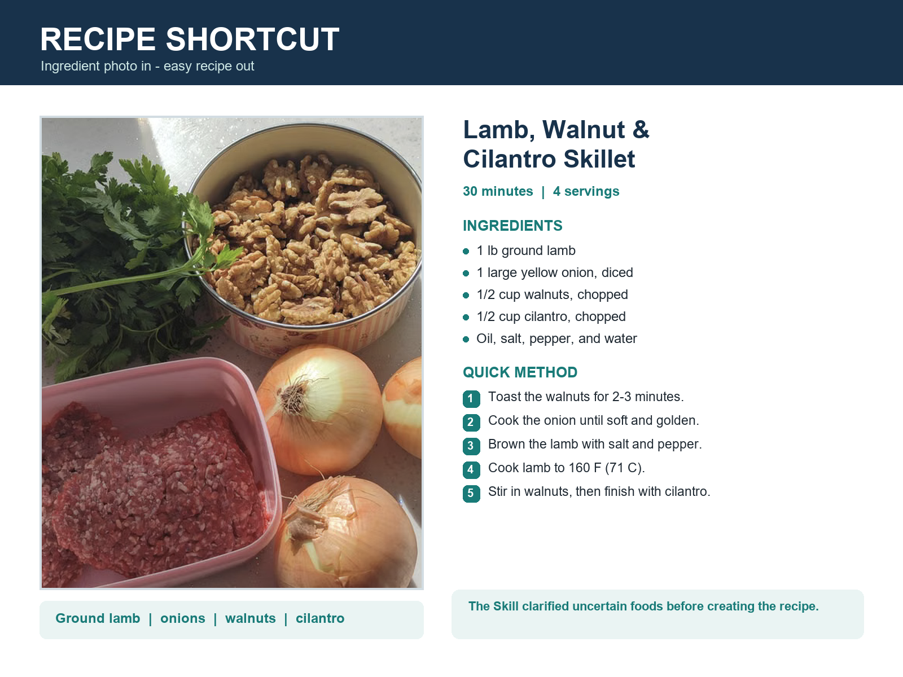

Recipe
Shortcut
Ingredient photo in, easy recipe out. A reusable cooking assistant designed to be useful at the exact moment someone looks into the kitchen and asks, “What can I make?”

A useful answer from an imperfect photo.
The design challenge was not just generating a recipe. The skill first separates ingredients it can clearly identify from uncertain items, avoids inventing quantities or freshness, and asks a brief follow-up only when the answer would materially change the result.
Its output is structured for a busy beginner: time, servings, practical amounts, required equipment, numbered steps, visual doneness cues, food-safety temperatures, substitutions, storage, and a transparent list of assumptions.
Clear. Safe. Cookable.
The final skill uses ordinary measurements, minimal equipment, and direct language. It labels assumed pantry staples and never recommends food that looks spoiled or cannot be identified safely.
Design rationale, structure, and example output.